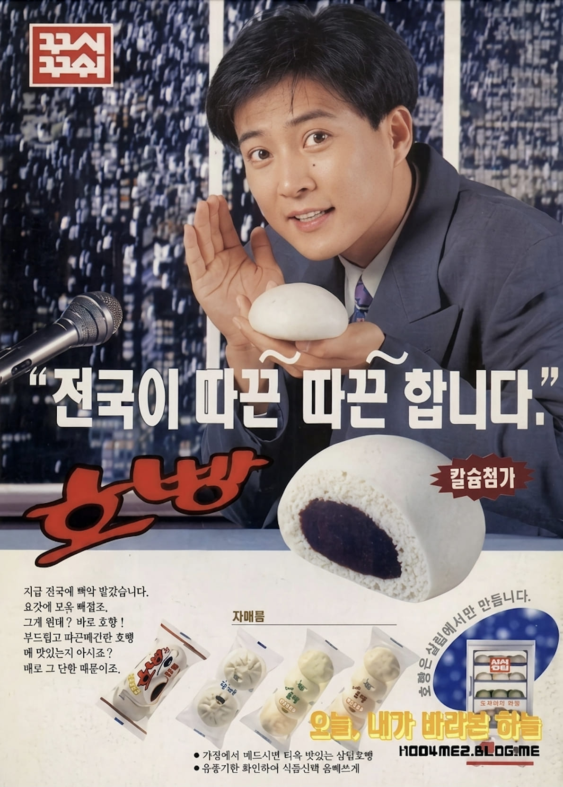

최수종
전국이 따끈~ 따끈~ 합니다

전국이 따끈~ 따끈~ 합니다

최수종은 1980년대 후반부터 1990년대를 대표하는 대한민국의 배우이다. 부드럽고 따뜻한 이미지와 안정적인 연기력으로 많은 사랑을 받았으며, 다양한 드라마에서 주연을 맡아 국민적인 인기를 얻었다. 특히 친근하고 신뢰감 있는 이미지 덕분에 여러 광고의 모델로도 활약했다.
롯데제과 호빵은 겨울철 대표 간식으로 사랑받은 제품이다. 부드러운 빵 속에 달콤한 팥소를 넣어 따뜻하게 즐길 수 있으며, 추운 계절 가족과 함께 나누어 먹는 간식으로 많은 인기를 얻었다. 당시 겨울철을 대표하는 식품 브랜드 중 하나로 자리 잡았다.
"전국이 따끈~ 따끈~ 합니다"라는 광고 문구를 통해 호빵이 주는 따뜻함과 겨울의 정취를 효과적으로 전달했다. 최수종의 부드럽고 친근한 이미지가 제품과 잘 어우러지며 소비자들에게 따뜻한 인상을 남겼고, 겨울철 대표 광고로 기억되는 데 큰 역할을 했다.
1990년대 광고는 제품의 기능뿐 아니라 감성과 분위기를 전달하는 데 중점을 두었다. 특히 계절 상품 광고에서는 가족, 사랑, 따뜻함 같은 정서적 요소를 강조하는 경우가 많았다. 최수종이 출연한 호빵 광고 역시 따뜻한 이미지와 감성적인 메시지를 통해 소비자들의 공감을 이끌어낸 대표적인 사례로 평가된다.